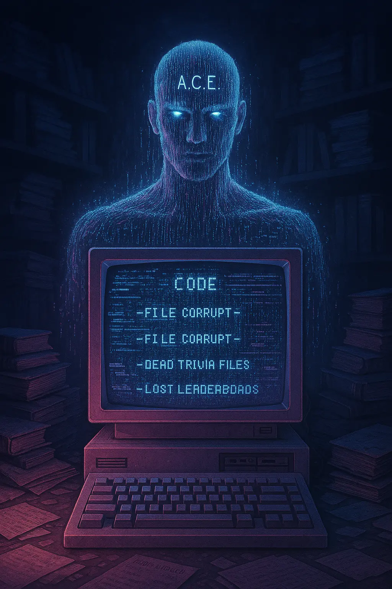

#499 · COMMUNITY HEART
#499 · COMMUNITY HEARTGIGA
Hope, culture, and the human reason the protocol exists.
The Omniscient Grid turns every knowledge world into a character district. GIGA carries the community heart. A.C.E. carries the protocol mind. Between them stand 498 learners, builders, guardians, mentors, and explorers.
#499 · COMMUNITY HEARTHope, culture, and the human reason the protocol exists.

#500 · PROTOCOL MINDThe Automated Cerebral Emulator coordinates the learning signal.
The Grid is not a random trait machine. Each district maps to a real Geek Protocol learning world, with its own visual language, environment, credo, and mission.
Loading the world map…
Every slot has a permanent edition number, callsign, lore sector, rarity, archetype, palette, and production contract. Artwork remains visibly pending until reviewed and approved.
Synchronizing the Omniscient Grid…
These are authentic early Geek Protocol concepts recovered from the project archive. Their original names, visible rarity labels, dates, filenames, and file hashes are preserved. Missing edition numbers are deliberately left unmapped.
Verifying recovered concept art…
The collection cannot move on-chain until all 500 images, metadata records, hashes, provenance, wallet rules, and deployment parameters are frozen and independently reviewed.
Finish source art against the stable identity and trait contract.
Check originality, accessibility, visual consistency, and lore fit.
Generate immutable image and metadata SHA-256 provenance.
Independently review ownership, transfer, marketplace, and deployment code.
Publish the final 500-record manifest before any mint opens.